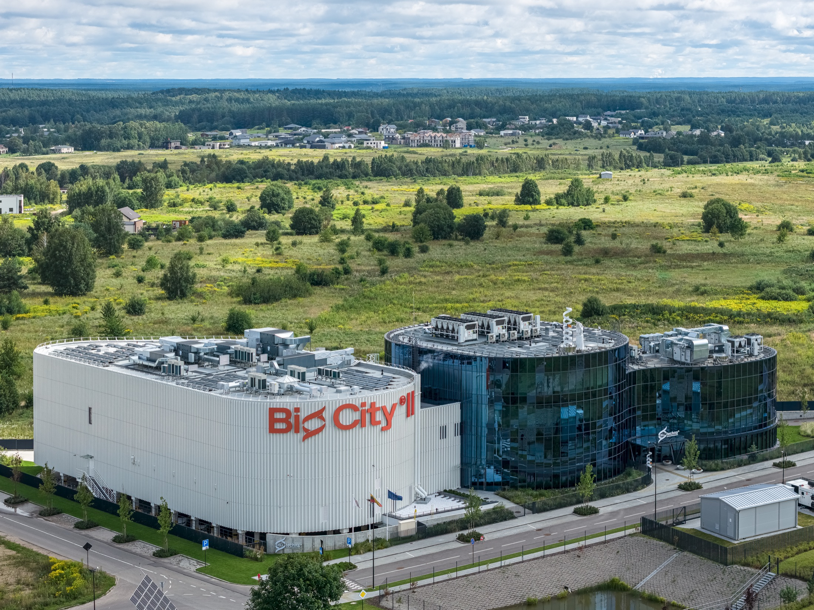
Architektūra
Vilnius
Daugiau nei 200 projektų — nuo gatvių iki bendrųjų planų.
„Atamis“ — Vilniuje įsikūrusi inžinerinė bendrovė, nuo 2006 m. dirbanti teritorijų planavimo, susisiekimo komunikacijų, inžinerinės infrastruktūros, architektūros, viešųjų erdvių ir BIM srityse. Projektus rengiame taikydami BIM metodiką — nuo pirmojo eskizo iki statybos priežiūros.
0
0+
0
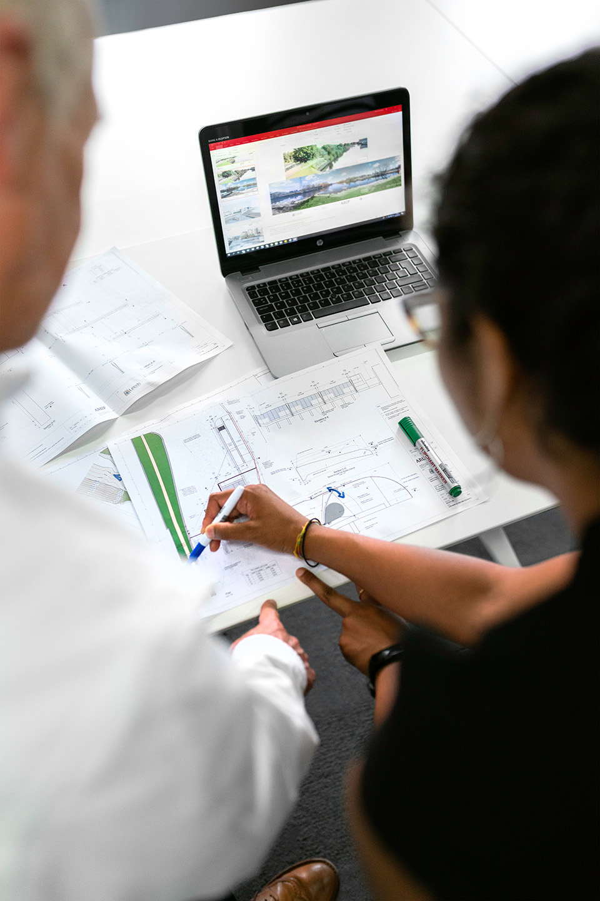
Penkios kryptys — viena komanda.
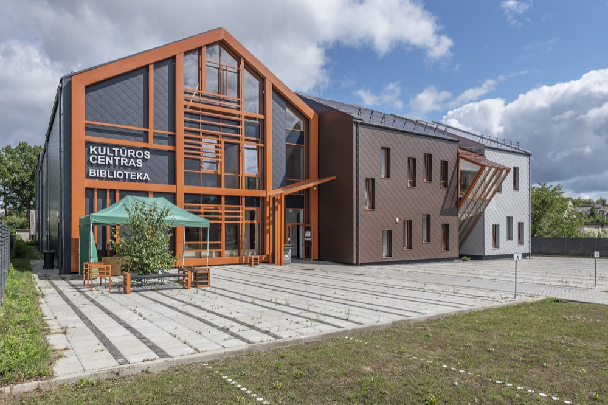
Estetiški, racionalūs ir energiškai efektyvūs pastatai bei viešosios erdvės — darnoje su aplinka.

Inžineriniai tinklai ir hidrotechniniai statiniai — nuo vandentiekio iki nuotekų valyklų.

Saugios, šiuolaikiškos ir ilgaamžės gatvės, keliai bei geležinkeliai.

Darni teritorijų plėtra ir racionali urbanizacija — pirmoji kiekvieno projekto stadija.

Trimatis informacinis modeliavimas — matome, kaip statinys veiks, dar prieš jį pastatant.
Išskirtiniai darbai iš arti.

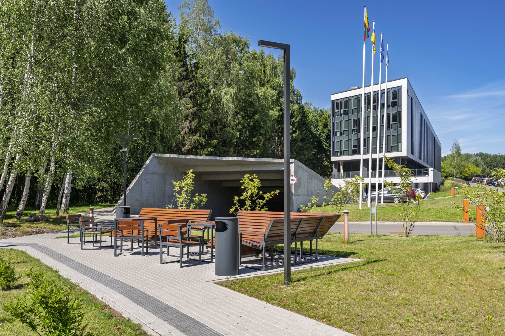
Daugiau kaip 9 750 m² administracinis pastatas Sietyno gatvėje, kuriame įsikurs penki sostinės policijos padaliniai. Projektas parengtas BIM metodika LOD 300–350 detalumu — nuo paties pastato iki lauko inžinerinių tinklų.


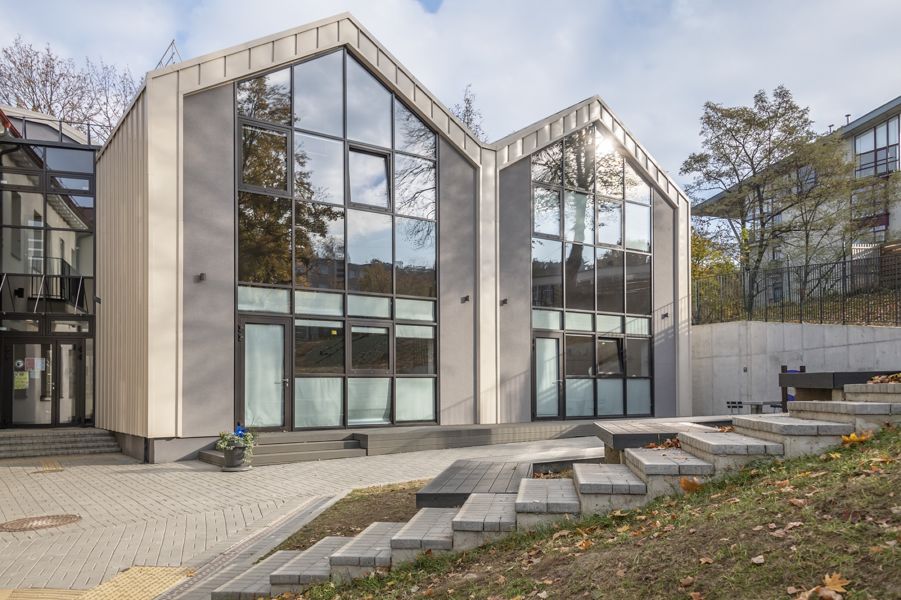

Dalis iš 200+ projektų — spustelėkite.
Projektas po projekto.
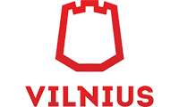
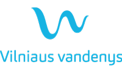
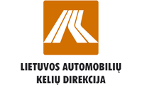
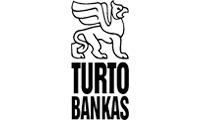
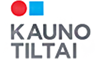
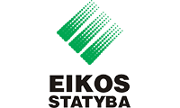
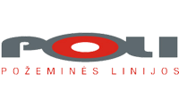
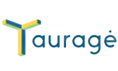
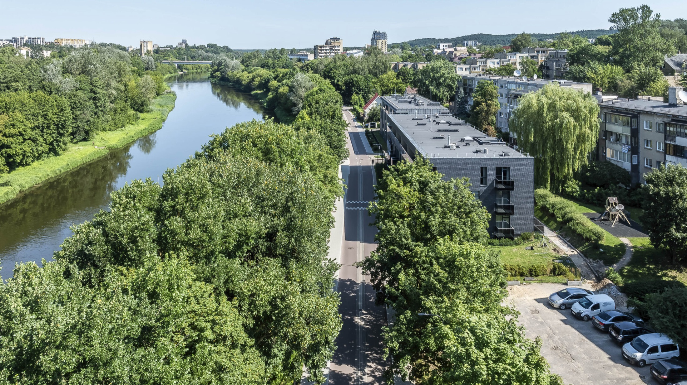
Nuo brėžinio iki tikrovės.
Žirmūnų g. 139
LT-09120 Vilnius, Lietuva